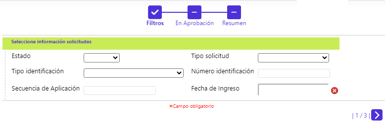

Aprobación de Solicitudes
En esta opción, mediante la funcionalidad de un wizard se permite filtrar y luego gestionar las distintas solicitudes que requieren surtir la etapa de aprobación, así como ver el Detalle de cada registro, y utilizando el enlace en el dato del campo Identificación solicitante, ir a conocer los datos del cliente. El wizard se compone de tres pasos: Filtros, En Aprobación y Resumen.
FILTRO

|
Estado |
Campo que mediante una lista de valores tipo combo, permite seleccionar las solicitudes que se encuentren: Aprobada o Negada. |
|
Tipo Solicitud |
Combo opcional que incluye los distintos tipos de solicitudes: Débito nuevo, Reposición débito, Renovación débito o Cambio de producto débito. |
|
Tipo identificacion |
Campo que dispone de una lista de valores tipo combo, de la cual se puede seleccionar aquel Tipo documento identificación para que el que se requiere efectuar la consulta. |
|
Numero Identificación |
Este campo opcional acepta cualquier dato alfanumérico de máximo dieciséis caracteres, y debe contener el número de identificación del cliente en particular, para el que se requiere efectuar la consulta. |
|
Secuencia de aplicacion |
Campo mediante el cual se posibilita la consulta de una única solicitud, ingresando el número consecutivo asignado por el sistema. |
|
Fecha ingreso |
Campo que ofrece la funcionalidad de un calendario, el cual permite filtrar las diferentes solicitudes ingresadas en dicha fecha. |
Al invocar el botón especial en la parte inferior derecha, el sistema realiza la búsqueda de acuerdo a los campos ingresados en el filtro. De esta forma se desplegará el segundo paso del wizard:

|
Fecha ingreso |
Muestra la fecha en la cual se grabó la solicitud. |
|
Secuencia |
Campo de salida que ilustra el número consecutivo asignado por el sistema y que permite diferenciar e identificar las solicitudes. |
|
Tipo solicitud |
Muestra el tipo de solicitud a tramitar en el formulario. |
|
Estado |
Indica la condición en que se encuentra la solicitud al arribar a este punto, las cuales pueden ser: Aprobada o Negada. |
|
Identificación solicitante |
Contiene el número del documento de identificación del solicitante. |
|
Nombre |
Muestra el nombre del cliente titular de tarjeta en proceso de aprobación. |
|
Seleccionar |
Campo tipo checkbox que permite marcar individualmente las solicitudes y realizar alguna de las acciones de: Aprobar, Avanzar o Negar. O, eventualmente, activar el botón especial correspondiente a avanzar, pasando esos registros a Resumen, y desde allí, Avanzar o Negar la(s) solicitud(es). |
En ese punto, mediante los botones especiales ubicados en la parte inferior izquierda, el sistema permite realizar cualquiera de las siguientes acciones:
|
|
Aprobar Solicitud: Permite aprobar las solicitudes siempre y cuando cumplan con los requisitos necesarios acorde con los parámetros definidos; en caso contrario la solicitud será negada. |
|
|
Avanzar todas las solicitudes: Permite pasar las solicitudes a la siguiente etapa de manera forzada, es decir, aunque no cumplan los requisitos parametrizados para la etapa actual, dependerá de si el sistema valida condiciones como filtros. |
|
|
Negar todas las solicitudes: Permite denegar totalmente, de forma manual, todas las solicitudes. |
Detalle: Al invocar ese enlace, se muestra el siguiente formulario en el que sus datos no son modificables:

Eventualmente, es factible que la entidad requiera seleccionar un número significativo de solicitudes bien sea para Avanzarlas o Negarlas, en este caso de forma "masiva", caso en el cual, después de marcarlas en el paso 2 "Solicitudes" y llevarlas al paso 3 Resumen, estando allí, basta con activar cualquiera de los dos botones especiales:

En ese punto, mediante los botones especiales ubicados en la parte inferior izquierda, el sistema permite realizar cualquiera de las siguientes acciones:
|
|
Avanzar Solicitud: Permite aprobar las solicitudes, de forma "masiva", siempre y cuando cumplan con los requisitos necesarios acorde con los parámetros definidos; en caso contrario la solicitud será negada. |
|
|
Negar solicitud: Permite denegar totalmente, de forma "masiva", todas las solicitudes. |